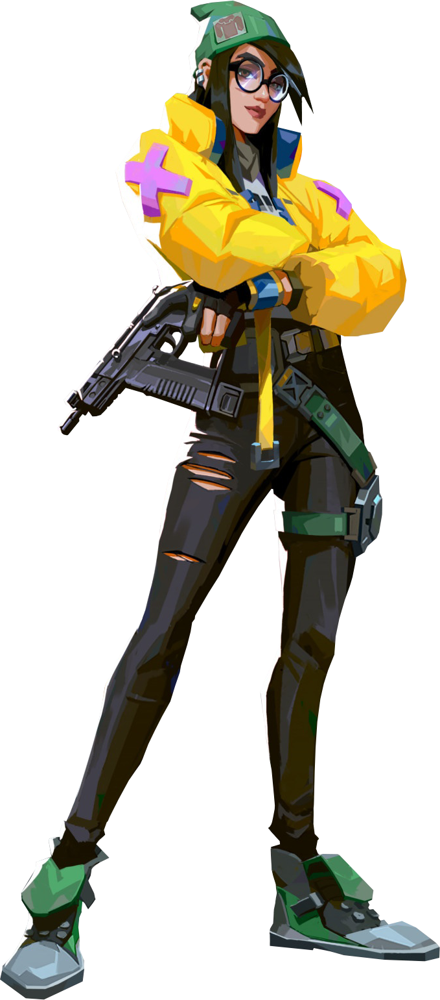

Agents
-

JETT
// หน้าที่ DUELIST
// ชีวประวัติ
เข้าร่วมรบในฐานะตัวแทนบ้านเกิดของเธอจากประเทศเกาหลีใต้ สไตล์การต่อสู้ที่แสนคล่องตัวและสง่างามของ Jett ทำให้เธอสามารถเผชิญหน้ากับความเสี่ยงในแบบที่ไม่มีใครทำได้ เธอวิ่งวนไปทั่วความชุลมุน เชือดเฉือนศัตรูก่อนที่พวกเขาจะรู้ว่าสิ่งใดได้โจมตีพวกเขา -

RAZE
// หน้าที่ DUELIST
// ชีวประวัติ
Raze ระเบิดออกจากบราซิลด้วยบุคลิกภาพที่เข้ากับคนอื่นได้ง่ายและปืนอันใหญ่โตของเธอ ด้วยสไตล์การเล่นอันดุเดือด เธอจึงเก่งกาจในการกวาดล้างศัตรูและสร้างช่องว่างด้วยเสียง "ตู้ม" จำนวนมหาศาล -

omen
// หน้าที่ CONTROLLER
// ชีวประวัติ
Omen ออกล่าในเงามืด ดั่งปีศาจแห่งความทรงจำ เขาทำให้ศัตรูตาสูญเสียการมองเห็น สามารถหายตัวข้ามสนาม แล้วก็ปล่อยให้ความหวาดระแวงเข้าครอบงำศัตรู ก่อให้เกิดความกลัวว่าเมื่อไหร่ที่เขาจะลงมืออีกครั้ง -

BREACH
// หน้าที่ INITIATOR
// ชีวประวัติ
Breach สามารถยิงพลังระเบิดอันรุนแรงโดยมีพื้นที่ของศัตรูเป็นเป้าหมายในการเคลียร์เส้นทาง เขาจะสร้างความเสียหายและการก่อกวนเพื่อให้คู่แข่งต้องเผชิญกับอุปสรรคอันหฤโหดทุกครั้ง -

brims
// หน้าที่ CONTROLLER
// ชีวประวัติ
ชายผู้เข้าร่วมจาก USA การโจมตีด้วย Orbital Arsenal ของ Brimstone ช่วยให้ทีมของเขาได้เปรียบเสมอ ทักษะในการส่ง Utility อย่างแม่นยำและจากระยะทางที่ไกลทำให้เขาเป็นผู้บัญชาการภาคพื้นดินที่ไม่มีใครเทียบได้ -

phoenix
// หน้าที่ DUELIST
// ชีวประวัติ
ส่งเสียงทักทายมาจากสหราชอาณาจักร พลังของ Phoenix ส่องแสงเรืองรองด้วยสไตล์การต่อสู้ของเขา เผาไหม้สนามรบให้เป็นจุณด้วยแสงสว่างและเปลวไฟ ไม่ว่าเขาจะมีทีมคอยสนับสนุนหรือไม่ เขาก็จะรีบเข้าไปในสงครามด้วยความตั้งใจของเขาเองเสมอ -

sage
// หน้าที่ SENTINEL
// ชีวประวัติ
Sage เป็นเสมือนดั่งป้อมปราการของจีน เธอมอบความปลอดภัยแก่ตัวเองและเพื่อนร่วมทีมในทุกที่ที่เธอไปโดยอาศัยความสามารถในการชุบชีวิตเพื่อนร่วมทีมและการป้องกันการโจมตี เธอจึงเป็นศูนย์กลางของความสงบท่ามกลางสนามรบอันดุเดือด -

sova
// หน้าที่ INITIATOR
// ชีวประวัติ
Sova เกิดในฤดูหนาวอันยาวนานของทุ่งทุนดราของรัสเซีย เขาติดตาม ตามล่า และกำจัดศัตรูได้อย่างมีประสิทธิภาพและแม่นยำด้วยธนูพิเศษที่เขาดัดแปลงขึ้นมาเองและความสามารถในการล่าชั้นเลิศ ต่อให้คุณวิ่งหนีไปสุดขอบฟ้า ก็จะไม่มีวันรอดพ้นจากเงื้อมมือของเขา -

viper
// หน้าที่ CONTROLLER
// ชีวประวัติ
Viper สาวนักเคมีชาวอเมริกันใช้อุปกรณ์ทางเคมีที่เป็นพิษเพื่อควบคุมสนามรบและทำลายวิสัยทัศน์ของศัตรู หากไม่ใช่พิษที่สังหารเหยื่อของเธอ ก็คงเป็นเกมสงครามเย็นของเธอนั่นแหละ -

cypher
/ หน้าที่ SENTINEL
// ชีวประวัติ
Cypher นายหน้าขายข้อมูลแห่งโมร็อกโก เขาเป็นหน่วยเฝ้าระวังที่ทำงานคนเดียวเพื่อการตามติดความเคลื่อนไหวของศัตรูในทุกย่างก้าว ไม่มีความลับใดที่ปลอดภัย ไม่มีการหลบหลีกไหนที่รอดพ้นสายตา Cypher นั้นจับจ้องอยู่เสมอ -

reyna
// หน้าที่ DUELIST
// ชีวประวัติ
หล่อหลอมขึ้นมาจากใจกลางเม็กซิโก Reyna กุมอำนาจในการต่อสู้เดียว โผล่ออกมาพร้อมกับทำการสังหารแทบทุกครั้ง ความสามารถของเธอนั้นถูกจำกัดด้วยทักษะของเธอ ซึ่งทำให้ประสิทธิภาพของเธอนั้นขึ้นอยู่กับการเล่น -

killjoy
// หน้าที่ SENTINEL
// ชีวประวัติ
อัจฉริยะแห่งประเทศเยอรมัน Killjoy เข้าควบคุมสนามรบได้อย่างง่ายดายด้วยกองทัพปัญญาประดิษฐ์ของเธอ หากความเสียหายจากอุปกรณ์ของเธอหยุดศัตรูไม่ได้ ดีบัฟจากหุ่นยนต์ของเธอจะทำให้มันง่ายขึ้นเอง -

skye
// หน้าที่ INITIATOR
// ชีวประวัติ
ส่งเสียงโห่ร้องจากออสเตรเลีย Skye และพวกสัตว์ร้ายของเธอเผาเส้นทางของศัตรูให้ลุกโชน ทีมของคุณจะแข็งแกร่งและปลอดภัยที่สุดเมื่ออยู่เคียงข้าง Skye ที่มาพร้อมกับสิ่งประดิษฐ์ของเธอที่ใช้ขัดขวางศัตรู และพลังที่สามารถฟื้นฟูผู้อื่น -

yoru
// หน้าที่ DUELIST
// ชีวประวัติ
Yoru ชายหนุ่มชาวญี่ปุ่นผู้สามารถเคลื่อนย้ายข้ามมิติโลกแห่งความเป็นจริงเพื่อแฝงตัวไปในกองทัพของศัตรูได้อย่างแนบเนียน ด้วยเล่ห์กลและความดุดันที่เทียบเท่ากัน เขาสามารถโค่นศัตรูได้ก่อนที่พวกมันจะได้ทันตั้งตัวเสียด้วยซ้ำ -

astra
// หน้าที่ CONTROLLER
// ชีวประวัติ
Astra เอเจนท์ชาวกานาควบคุมพลังแห่งจักรวาลเพื่อปรับรูปแบบสนามรบให้เป็นไปตามความต้องการของเธอ ด้วยความสามารถในการควบคุมร่างดวงดาวของเธอและพรสวรรค์ในการวางแผนกลยุทธ์อย่างลึกซึ้ง เธอมักจะนำหน้าศัตรูอยู่หนึ่งก้าวเสมอ -

kay-o
// หน้าที่ INITIATOR
// ชีวประวัติ
KAY/O เป็นจักรกลสงครามที่ถูกสร้างขึ้นเพื่อวัตถุประสงค์เดียว: กำจัด Radiant ความสามารถในการยับยั้งพลังของศัตรูจะลดการตอบโต้จากคู่ต่อสู้ของเขาได้อย่างมาก และทำให้เขาและเพื่อนร่วมทีมเอาชนะศึกไปได้ในที่สุด